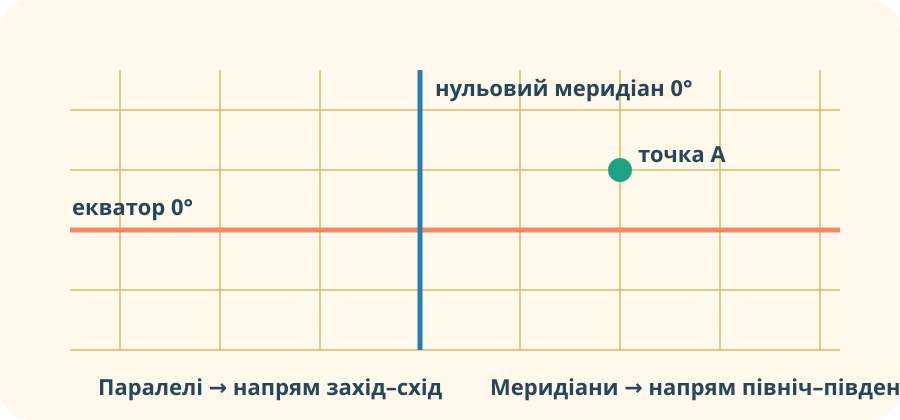

Як передати місце без назви?
Ситуація
Рятувальники отримали фото судна посеред океану. Назви місця немає. Які дві незалежні «лінії адреси» потрібні, щоб описати точне положення?

Доказове питання: чому однієї лінії недостатньо для визначення точки?
Лабораторія градусної сітки
Рухайте повзунки. Умовна точка описується двома значеннями. Спостерігайте, яке з них відповідає руху вгору/вниз, а яке — ліворуч/праворуч.
Паралель чи меридіан?
Лінія A
Усі точки мають однакову відстань у градусах від екватора.
Лінія B
З’єднує Північний і Південний полюси.
Лінія C
Може мати значення 0°, 20° пн., 50° пд.
Глобус — не просто малюнок

NASA: «Blue Marble» показує реальну Землю як кулеподібне тіло. На поверхні немає намальованих паралелей чи меридіанів — це уявна координатна система, яку люди накладають на планету для вимірювань і навігації.
Джерело NASA →Знайдіть помилку в аргументі
«Паралелі та меридіани — природні лінії Землі, бо їх видно на глобусі».
Нульовий меридіан на карті
OpenStreetMap: район Королівської обсерваторії в Гринвічі. Для шкільної моделі тут проходить початковий меридіан 0°.
Відкрити OSM →Доказове завдання
Учень каже: «Якщо Гринвіч має 0° довготи, то це центр Землі». Чи випливає це з карти?
Додатково: перевірте, де на OSM змінюється довгота зі східної на західну.
Коротке пояснення §4
Після перегляду випишіть лише два твердження, які можна перевірити на карті або глобусі.
Тепер формулюємо правила
Паралелі
Уявні кола, проведені паралельно екватору. Екватор — найбільша паралель і має 0°. Паралелі задають основу для визначення географічної широти.
Меридіани
Уявні півкола, що з’єднують полюси. Початковий меридіан має 0°. Меридіани задають основу для визначення географічної довготи.
Градусна сітка
Система паралелей і меридіанів на глобусі або карті. Вона дає змогу визначати положення точок у градусах. На наступному уроці цю систему використаємо вже для точного визначення широти й довготи.
Чи можна знайти точку лише за однією паралеллю?
C — Claim: дайте відповідь «так/ні».
E — Evidence: наведіть доказ із моделі, карти або лабораторії.
R — Reasoning: поясніть, чому цей доказ підтримує твердження.
§4 + маленьке дослідження
Обов’язково
Опрацювати §4 «Що таке градусна сітка». В електронному підручнику знайдіть рисунок із паралелями й меридіанами та поясніть у 3–4 реченнях, чому сітка є уявною, але вимірювання за нею — реальні.
Електронний підручникДослідження
Відкрийте будь-яку точку в OpenStreetMap. Знайдіть у URL або інформації карти координати. Яке число пов’язане з напрямом північ–південь, а яке — схід–захід? Поясніть, не використовуючи готового визначення з підручника.
Тест — 10 балів
Тест відкриється лише після заповнення даних.